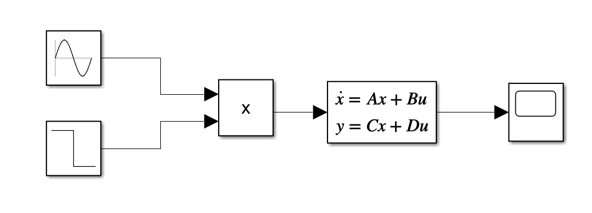

Simulink es una herramienta de MATLAB que permite modelar, simular y analizar sistemas dinámicos mediante un enfoque de programación gráfica.
El usuario construye el modelo conectando bloques que representan operaciones matemáticas, sistemas físicos o funciones lógicas. Las conexiones entre bloques representan señales, que transmiten información en forma de variables que evolucionan en el tiempo.
En Simulink, una señal puede ser escalar, vectorial o matricial. Su dimensión y tipo de dato dependen del bloque que la genera y de la configuración del modelo. En términos generales, puede pensarse como un arreglo que cambia con el tiempo.
La Figura C.1 muestra un ejemplo sencillo de un modelo en Simulink.

Las entradas permiten excitar el sistema o modelo. Simulink ofrece diversos bloques para generar señales de entrada.
El bloque Constant genera una señal con valor constante durante toda la simulación, como se muestra en la Figura C.2.
El bloque Sine Wave genera una señal sinusoidal con amplitud, frecuencia y fase configurables, como se muestra en las Figuras C.3 y C.4.


El bloque Ramp produce una señal de tipo rampa lineal, útil para representar entradas que crecen con pendiente constante, donde, como se muestra en la Figura C.6 se puede configurar tanto la pendiente como el intervalo donde inicia la señal. El bloque se muestra en la Figura C.5.


El bloque Band-Limited White Noise permite generar ruido blanco, empleado en análisis de respuesta a señales aleatorias. Como se muestra en la Figura C.7.

Para emplear este bloque es necesario contar con la densidad espectral de potencia, la frecuencia de muestro asociada y un valor de semilla que permita generar el ruido no correlacionado. Como se Muestra en la Figura C.8.

Este bloque permite incorporar variables previamente definidas en el espacio de trabajo (workspace) de MATLAB y asignar como señales en Simulink, facilitando la simulación con datos experimentales o precomputados. La variable cargada desde el espacio de trabajo debe estructurarse como una matriz de dos columnas: la primera indica los instantes de tiempo y la segunda los valores de la señal. Si la duración de la simulación excede el rango temporal de los datos, los valores deben prolongarse como cero, evitando en todo momento el uso de la opción de “extrapolación”. El bloque y sus parámetros se muestran en las Figuras C.9 y C.10


Los bloques de operaciones permiten transformar señales mediante operaciones matemáticas básicas.
El bloque Sum combina varias señales mediante suma o resta, dependiendo de la configuración de sus entradas. Como se muestra en la Figura C.11.

El número de entradas, su posición dentro del bloque y su signo pueden modificarse agregando los símbolos ‘+’, ‘–’ y ’|’
El bloque Product multiplica dos señales entre sí. Es posible configurarlo para modificar el número de entradas y definir si la operación entre ellas corresponde a una multiplicación escalar o matricial. Como se muestra en la Figura C.12

El bloque Gain aplica una ganancia constante a una señal de entrada, mostrado en la Figura C.13. Este bloque, al igual que Product, admite multiplicación escalar o matricial, con la opción adicional de cambiar el orden en la operación matricial. Como se muestra en la Figura C.14.


El bloque Integrator, mostrado en la Figura C.15. calcula la integral de la señal de entrada, representando sistemas dinámicos como masas, resortes o cargas acumuladas. Este bloque permite definir la condición inicial de la integración, ofrece la posibilidad de establecer límites superior e inferior mediante saturación, y cuenta con configuraciones adicionales para el manejo de la salida y la opción de reiniciar el integrador. Como se muestra en la Figura C.16.


Simulink ofrece bloques para representar modelos dinámicos en distintas formas matemáticas.
El bloque State-Space permite implementar un sistema LTI en representación de variables de estado, definido por las matrices \(A\), \(B\), \(C\) y \(D\). Como se muestra en las Figuras C.17. y C.18.


El bloque Transfer Function implementa sistemas definidos mediante funciones de transferencia, expresadas como el cociente de polinomios en \(s\), como se muestra en la Figura C.19. Los parámetros a ingresar en el bloque se muestran en la Figura C.20.


En algunos casos, es necesario generar señales complejas o no lineales que no pueden obtenerse sólo con bloques estándar. El bloque MATLAB Function permite definir una función que recibe una señal de entrada y produce una salida calculada en código MATLAB. El bloque se muestra en la Figura C.21.
Este bloque permite integrar funciones escritas en MATLAB directamente en un modelo, ejecutando código personalizado durante la simulación. Su sintaxis se muestra en la Figura C.22.


Las salidas permiten visualizar, registrar o exportar los resultados de la simulación.
El bloque Scope es un osciloscopio virtual que muestra la evolución temporal de las señales durante la simulación. La Figura C.24 muestra una señal sinusoidal de entrada..


Este bloque permite exportar las señales al workspace de MATLAB, para su posterior análisis o graficación. Como se muestra en la Figura C.25.

Antes de ejecutar un modelo, es necesario configurar sus parámetros de simulación: tiempo inicial \(t_\text {init}\), tiempo final \(t_\text {end}\) y paso de integración \(t_\text {step}\). Simulink ofrece distintos métodos de integración (fixed-step y variable-step) y algoritmos como Runge-Kutta de cuarto orden (ode4). Esta configuración se encuentra en la sección mostrada en la Figura C.26.
Los bloques Mux y Demux permiten agrupar y desagrupar señales, respectivamente. Son útiles para manejar señales vectoriales en diagramas complejos. Ambos bloques se muestran en la Figura C.27.

El bloque Selector permite extraer componentes específicas de una señal vectorial o matricial, como se muestra en la Figura C.28.

El bloque Zero-Order Hold convierte señales continuas en discretas manteniendo el último valor de muestreo, lo que es esencial en sistemas mixtos continuo. El paso temporal se define en los parámetros como se muestra en la Figura C.30. Este bloque se muestra en la Figura C.29.


Se realiza el ejemplo de un modelo de un grado de libertad sometido a una aceleración basal. Inicialmente se definen los parámetros del sistema dinámico, masa, frecuencia natural y razón de amortiguamiento.
A partir de los parámetros definidos se obtienen los coeficientes de la ecuación diferencial de movimiento asociada.
Luego se escribe en función de las ecuaciones de espacio estado. En este caso particular se quiere como salida el desplazamiento relativo, la velocidad relativa y la aceleración absoluta.
Después se lee el registro de aceleración y se crea una matriz con tiempo-aceleración.
Se ajustan los parámetros de simulación, considerando un paso temporal de 0.001 s y se ajusta el tiempo de simulación al tiempo del registro de aceleración.
Ya con los parámetros definidos se ingresan en la configuración de Simulink, se utiliza Runge-Kutta (ode4), como se muestra en la Figura C.31.

Luego se modela la entrada como un bloque from workspace, como se muestra en la Figura C.32. El sistema dinámico utilizando el bloque state-space,como se muestra en la Figura C.33, donde las salidas se separan utilizando un bloque demux para finalmente ser enviadas al espacio de trabajo utilizando el bloque to workspace. El sistema completo se muestra en la Figura C.34.


Aparte se incorporan bloques scope en todas las señales para poder observarlas antes de llevar los datos al espacio de trabajo.
Finalmente, para llamar las variables desde el espacio de trabajo y correr la simulación se utiliza el siguiente código.